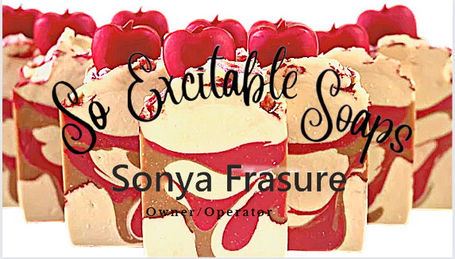

Thanks for taking the time to learn about us.
Meet our passionate crafter, who found solace and inspiration in soap making during the challenging times of the pandemic.
As a dedicated nurse, they not only cared for others but also discovered a newfound hobby that would later blossom into ExcitableSoaps.

It all began with a desire to create something meaningful and nourishing for their loved ones. Over the course of two years, our crafter embarked on a journey of experimentation and discovery, meticulously crafting bars of soap for family and friends. With each batch, they honed their skills, delving deeper into the art and science of soap making.
After countless hours of in-home experimentation and self-education, ExcitableSoaps was born. Armed with knowledge gained from their background in nursing and a newfound passion for soap making, our founder decided to share their creations with the world.
From learning the intricacies of saponification to mastering the precise calculation of fats to lye ratios, our crafter devoted themselves to perfecting their craft. They immersed themselves in the study of industry standards and safe practices, ensuring that each bar of soap produced is not only luxurious but also safe and nourishing for the skin.
At ExcitableSoaps, we take pride in our products, crafted with love and expertise. We believe in the power of handmade goods to enrich our lives and bring joy to everyday routines. We invite you to experience the difference that passion and dedication make, and we hope you'll love our products as much as we do.
Exploring the Art of Soap Making
Soap making is a fascinating blend of science and art, where carefully selected ingredients combine to create luxurious bars of soap. Central to the process is the reaction between fats and lye, known as saponification, which transforms these ingredients into soap.
Ratio of Lye to Fats
The ratio of lye to fats is crucial in soap making, as it determines the properties of the final product. Too much lye can result in a harsh soap, while too little may lead to a soft and oily bar. Finding the right balance is key to creating a well-balanced soap.
Plant-based fats, such as olive oil, coconut oil, and shea butter, are popular choices in handmade soap making due to their nourishing properties and sustainability. These fats require precise calculation of the lye amount to achieve the desired soap consistency and lather.
On the other hand, animal lard, derived from rendered animal fat, was traditionally used in soap making for its ability to produce a creamy and luxurious bar. While less common today due to ethical and environmental concerns, animal lard can still be used in soap making, requiring a different lye calculation compared to plant-based fats.
Soap Making Methods
There are several methods of soap making, each with its own unique characteristics and benefits: hot process, cold process, and pre-made soap batter. Each method offers a different approach to soap making, allowing for customization and creativity in the soap-making process.
Disclaimer: We do not use animal fats in our products. We use plant-based fats and oils. The palm oil we use is sustainably sourced from areas that do not harm the environment.
Always check for the RSPO label for sustainably sourced palm oil!
Disclaimer:In these processes we mention an agent of acid called lye. Lye is a strong base that is used in soap making to saponify fats and oils. It is important to handle lye with care and follow safety precautions to prevent injury.
The process of curation is important as the it allows for all the lye to be dissolved in the saponification process. This is important as lye is a strong base and can be harmful if not properly used.
When you use a bar of soap before its curation date, you may experience a burning sensation on your skin. This is due to the lye not being fully used up in the saponification process.
Never use uncured soaps. We will never ship or sell uncured soaps, even if ordered specifically to. Can lead to intense pain and chemical burns.
- Hot Process: In hot process soap making, the soap mixture is heated and cooked, accelerating the saponification process. This method results in a quicker turnaround time, as the soap can be used immediately after curing for a short period. Hot process soap tends to have a rustic appearance and a firmer texture.
- Cold Process: Cold process soap making involves mixing the lye solution with melted fats and oils, followed by a curing period of several weeks to allow the soap to harden and mature. This method offers more control over the design and fragrance of the soap, as additives can be incorporated before pouring into molds. Cold process soap typically has a smooth and creamy texture.
- Pre-made Soap Batter: Some soap makers opt for pre-made soap batter, which eliminates the need for measuring and mixing lye. This ready-to-use batter is often made from a blend of oils and can be customized with fragrances and additives. While convenient, pre-made soap batter still requires curing time to ensure the soap reaches its full potential. Although there are some clay/earth-based soaps that completely ignore the need for curation or lye processing!
Whichever method you choose, soap making is a rewarding craft that allows for creativity and experimentation. With careful attention to detail and quality ingredients, you can create beautifully crafted bars of soap that nourish the skin and delight the senses.
Check out more at, Soapguild.org. A free source of getting started and different specialized skills with detailing your soap!